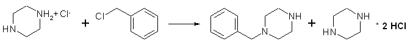

Procedure

A solution of 24.3 g. (0.125 mole) of piperazine hexahydrate in 50 ml. of absolute ethanol, contained in a 250-ml Erlenmeyer
flask, is warmed in a bath at 65�C as there is dissolved in the solution, by swirling, 22.1 g. (0.125 mole) of piperazine
dihydrochloride monohydrate (Note 1). As warming in the bath at 65�C is continued, there is added during 5 minutes, with vigorous
swirling or stirring, 15.8 g (14.3 ml, 0.125 mole) of recently distilled benzyl chloride. The separation of white needles comes
almost immediately. After the solution has been stirred for an additional 25 minutes at 65�C, it is cooled, and the unstirred
solution is kept in an ice bath for about 30 minutes. The crystals of piperazine dihydrochloride monohydrate are collected by
suction filtration, washed with three 10ml portions of ice-cold absolute ethanol, and then dried. Recovery of the dihydrochloride
is 21.5-22.0 g. (97-99%) (Note 2).
The combined filtrate and washings from the piperazine dihydrochloride are cooled in an ice bath and treated with 25 ml of
absolute ethanol saturated at 0�C with dry hydrogen chloride (Note 3). After the solution has been well mixed, it is cooled for
10-15 minutes in an ice bath. The precipitated white plates of 1-benzylpiperazine dihydrochloride are collected by suction
filtration, washed with dry benzene, and dried. The product, which melts at about 280�C with decomposition, after sintering at
about 254�C (Note 4), amounts to 29-29.5g (93-95%). A solution of this salt in 50ml of water is made alkaline (pH > 12) with
about 60 ml of 5N sodium hydroxide, then extracted twelve times with 20ml portions (Note 5) of chloroform. The combined extracts
are dried over anhydrous sodium sulfate, and the pale brown oil (Note 6) remaining after removal of solvent is distilled at
reduced pressure in a Claisen flask. The yield of pure 1-benzylpiperazine, bp 122-124�C/2.5 mmHg, is 14.3-16.5g (65-75%).
Notes
- Piperazine dihydrochloride monohydrate, which is recovered almost quantitatively in this procedure, may be readily prepared in essentially quantitative yield from the free base by the following procedure.
- A brisk stream of hydrogen chloride gas is passed for 5-8 minutes into a solution of 24.3g (0.125 mole) of piperazine
hexahydrate in 50 ml of absolute ethanol contained in a 250-ml Erlenmeyer flask. A wide gas-inlet tube (about 10mm) is used
to avoid clogging, and the flask is cooled in an ice bath to keep the temperature at about 25�C. After the gas stream has
been discontinued, the contents of the flask are cooled to about 0�C, and the crystalline product is collected by suction
filtration and washed with two 25ml portions of ice-cold absolute ethanol. The yield is about 22g (0.125 mole).
- If the filtrate from this isolation is evaporated to dryness at reduced pressure, crude 1-benzyl-4-piperazinium chloride is
left as a residue. For removal of any piperazine dihydrochloride the chloride may be crystallized after rapidly filtering a hot
solution in about 50 ml of absolute ethanol. Concentration of the filtrate, followed by cooling, gives 12.4 g (84%) of
1-benzyl-4-piperazinium chloride as prismatic plates, mp 167-168�C. This salt may be converted to the dihydrochloride by
treatment with ethanolic hydrogen chloride.
- When absolute ethanol is saturated with hydrogen chloride at 0�C, the resultant solution is about 10.5N in hydrogen chloride.
- The melting point has been reported as 253�C by Baltzly, JACS 66, 263 (1944).
- The checkers found continuous extraction with chloroform to be convenient.
- The free base rapidly absorbs carbon dioxide on exposure to air and should therefore be protected during both manipulation and storage. The undistilled oil may be converted in good yield to 1-benzoyl-4-benzyl- piperazine hydrochloride, mp 245-245.5�C, by treatment with benzoyl chloride in benzene solution.
Precursor Preparation and Other Tips
by Nicodem
Piperazine hydrochloride or more usually citrate of veterinary grade (used as a antihelminitic) is cheap and good enough
for your goal. If you get the citrate (that contains 36% piperazine base) you can transform it in to the hydrochloride
(why you need that I'll explain later):
Piperazine Dihydrochloride Monohydrate
Put 100g of piperazine citrate in a 500ml beaker and add 100ml of 30% hydrochloric acid (20 to 36% conc. will do if
you recalculate the volume). Then add 100ml of ethanol (or isopropanol) and start heating on a water bath at ~60�C with
frequent stirring for 30 minutes (the solids never completely dissolve, the just change crystal form). Let it cool at room
temperature and dilute with acetone to a volume of ~500ml and suction filter the white crystalline solids. Wash them with
acetone a few times and let them air dry. The yield of piperazine dihydrochloride monohydrate is usually more than 90%.
From piperazine dihydrochloride monohydrate you can form an ethanolic solution of piperazine monohydrochloride that
can be used for the alkylation with benzylchloride:
Ethanolic Piperazine Monohydrochloride
In a 500ml beaker dissolve 23g of sodium hydroxide in 250ml of ethanol with mixing at a temperature of ~60�C. While
still hot slowly add 100g of piperazine dihydrochloride monohydrate and stir for an hour and then let it cool at room
temperature. Then suction filter the solids (NaCl) and wash them thoroughly at least three times with ~70 ml of ethanol.
The combined filtrates are then concentrated to a volume necessary to get the concentration of piperazine monohydrochloride
to above 2 mol/L (i.e. below 280ml). A vacuum pump is a good idea but merely distilling off the ethanol will do it. The volume
of the warm solution is measured accurately and the concentration of piperazine monohydrochloride is calculated based
on the 0.565 mol of piperazine dihydrochloride monohydrate used at the beginning. The solution is over saturated so
warming is necessary prior any use to dissolve the crystaline piperazine monohydrochloride.
Now you have the ethanolic solution that can be used in the known BZP synthesis. This procedure avoids the tedious
isolation of the hygroscopic piperazine hexahydrate - it is highly water soluble, very hygroscopic and you can never be
absolutely sure about the piperazine content.
The raw product BZP monohydrochloride can be recrystallized from isopropanol. If you don�t like the smell of it you
can form the odorless and more nicely cristaline BZP dihydrochloride by dripping an molar equivalent of conc.
hydrochloric acid to the suspension of BZP monohydrochloride in isopropanol (or acetone), mixing it for 30min and
filtering it off.
The procedure from Org. Synth. (the one above) does yields almost only the monoalkylated product even in the
raw product (the hydrochloride functioning as a protecting group and the precipitating dihydrochloride making sure the
piperazine in solution is always a monobasic salt). But in case anybody is concerned about the possible contamination
with N,N�-dibenzylpiperazine I can confirm it does not have any noteworthy acute toxicity up to doses of 300mg (as a
dihydrochloride) though I don�t know about any possible chronic toxicity. Since the yield of the above preparation of
the ethanolic solution is only assumed to be 100%, assuming it to be 95% might be better, thus contaminating the product
with the harmless piperazine hydrochlorides instead of the less known dibenzylpiperazine. In any case the piperazine
dihydrochloride will be left over while recrystallising the product from isopropanole. It will however take some
hydrochloric acid from the BZP monohydrochloride thus somewhat lowering the yield of the recrystallisation.